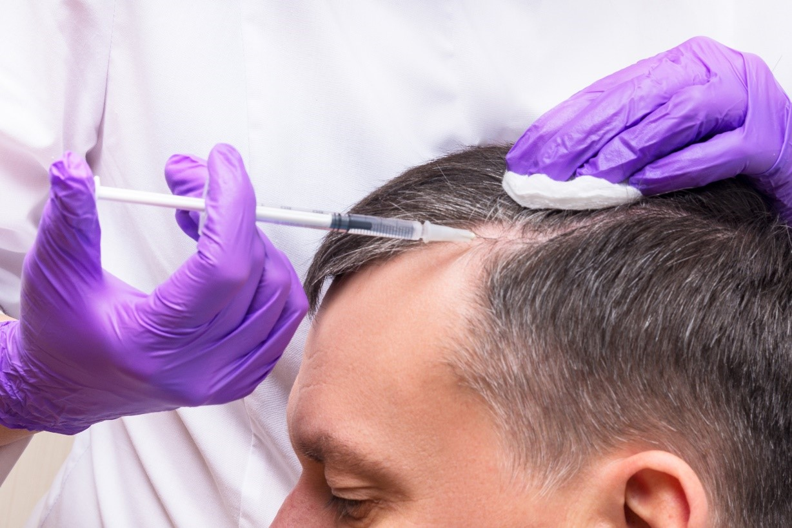
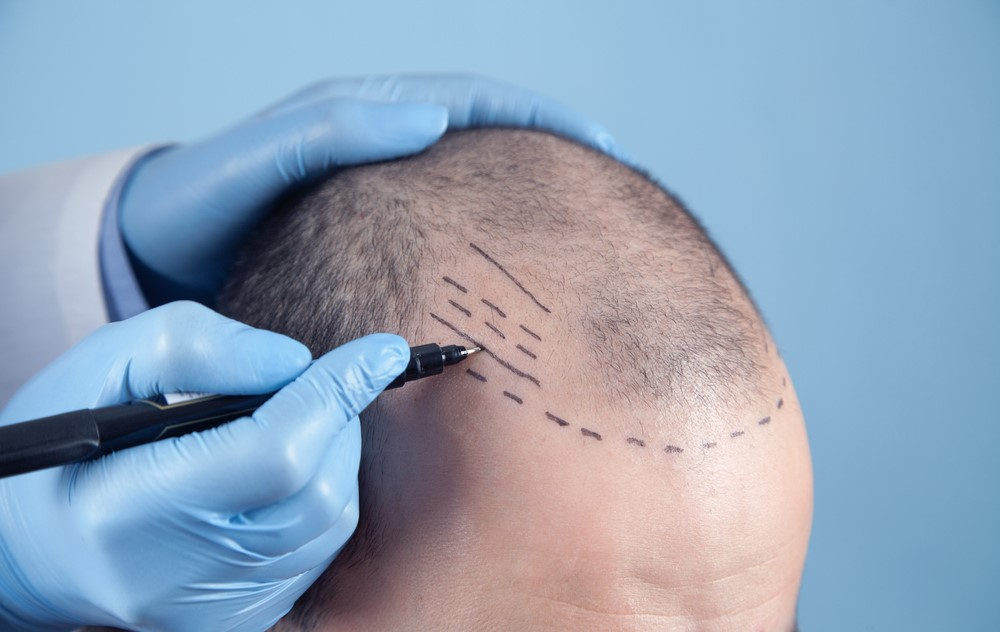
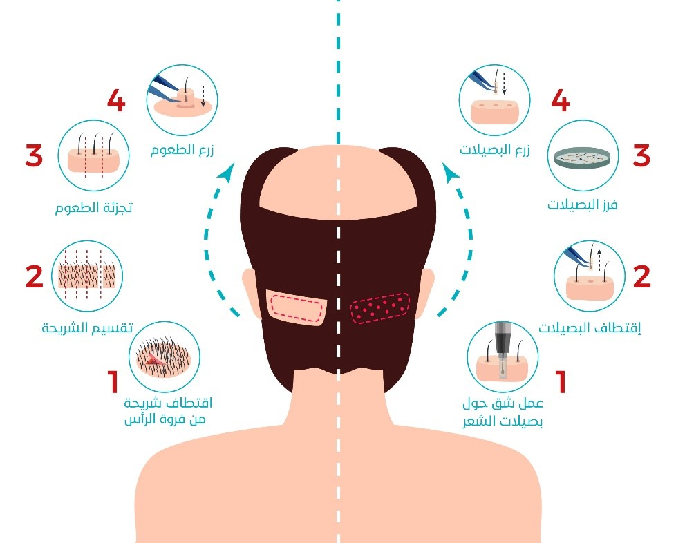

زراعة الشعر
تعتبر زراعة الشعر إجراءً تجميلياً شاع استخدامه في السنوات الأخيرة بتقنيات متطورة ودون شعور بالألم، ويتم ذلك عبر الاستعانة بمناطق أخرى مانحة من الجسم

الفرق بين زراعة الشعر في ايران وتركيا 2021
جدول المحتويات
ما هي زراعة الشعر؟
تهدف زراعة الشعر إلى استعادة مظهر أكثر شبابا لأولئك الذين يشعرون بالإنزعاج من تساقط الشعر ، وخاصة بسبب الصلع الوراثي و الثعلبة.
ويقوم بها جراح التجميل بعد تحديد نوع الجراحة و التقنية المناسب ، ويتم فيها نقل بصيلات الشعر من منطقة المانحة ، حيث تكون المنطقة المانحة غزيرة الشعر مثل جوانب ومؤخرة فروة الرأس ، إلى منطقة أخرى تعاني من فقدان الشعر.
وقد بلغ عدد زوار تركيا في عام القادمين في عام 2019 بهدف إجراء عملية زراعة الشعر ما يقارب 500 ألف زائر ، قادمين من أكثر من 120 دولة حول العالم ، وبشكل رئيسي من الدول الأوروبية.
وتقدم علاجك الطبية أفضل الأطباء خبرة في تركيا و أٌكثر التقنيات المتقدمة فعالية في مجال زراعة الشعر دون ترك ندب في مكان العملية.

الفرق بين زراعة الشعر في تركيا و إيران
تختلف زراعة الشعر في تركيا عن زراعة الشعر في إيران بإختلاف عدد التقنيات المستعملة ، وحجم ونوع الخدمات المرافقة أثناء قدوم الزائر ، ويرتبط إختلاف التكلفة بين تركيا وإيران أكثر بنوعية التقنية المستخدمة ، وبالإضافة لعدد الخدمات الداخلية والخارجية لهذه المراكز ، لكن أكثر الفروقات يظهر في مدى القدرة على الحفاظ على التوازن مابين الحصول على أفضل النتائج وقلة التكلفة ، سنستعرض هذه الفروقات بالتفصيل في الجدول التالي:
|
|
إيران |
تركيا |
|
السرعة والجودة |
منافسة أقليمية ، وقد يصل مستوى بعض المراكز للمنافسة العالمية |
منافسة عالمية |
|
المعايير |
متوسطة إلى عالية |
عالية وخاصة المعايير الأوروبية |
|
التشخيص |
كتكلفة منفصلة ، مما يزيد من تكلفة العملية بشكل مجمل |
تقدم العديد من المراكز الطبية خدمة التشخيص المجاني |
|
تقنيات زراعة الشعر |
تعتمد العديد من المراكز فيها على التقنيات القديمة |
أغلب المراكز تعتمد التقنيات الحديثة ويقوم الأطباء الأتراك أنفسهم بتطوير بعض هذه التقنيات |
|
عدد الخدمات والمرافق |
متوسطة |
كبيرة وتتضمن المنتجعات السياحية الطبية والحمام التركي |
|
التطور التقني والخدمي
|
متوسط ، ويلاحظ ضعف التطبيقات الإلكترونية التي تربط وسائل النقل بالمسافرين وضعف الإنترنت وانقطاع الكهرباء لفترات طويلة |
يواكب أحدث التقنيات العالمية ، وذلك عبر تطبيقات محلية وعالمية ، ويتم حاليا العمل على توفير خدمة توصيل الأدوية للمريض عبر طائرات بلا طيار |
|
تكلفة الإقامة والمواصلات |
منخفضة جداً |
منخفضة |
|
تكلفة العملية وسطياً |
800 إلى 1200 دولار |
1200 إلى 1500 دولار |
|
آلية الدفع |
رفض التعامل بالبطاقة الإئتمانية |
ممكنة بكل الطرق |
وتقدم علاجك الطبية حلول جذرية ودائمة لمشكلة تساقط الشعر لديكم ، وذلك عبر أحدث التقنيات العالمية مثل gold DHI plus و السفير Sapphire، بأيدي نخبة جراحي التجميل في تركيا.
تقنيات زراعة الشعر في إيران
- زراعة الشعر بالإقتطاف العادية ( FUE)
- تقنية زراعة الشعر بالشريحة (FUT)
- الطريقة التركيبة وذلك بجمع تقنيتين FUE و FUT.
- زراعة الشعر للنساء بدون حلاقة
- تقنية BHT لزراعة الشعر من منطقة الجسم
- نادرا تستخدم تقينة السفير
تقنيات زراعة الشعر في تركيا
- زراعة الشعر بالإقتطاف العادية ( FUE)
- تقنية زراعة الشعر السفير Sapphire
- تقنية زراعة الشعر بأقلام تشوي DHI
- زراعة الشعر بالروبوت
- زراعة الشعر بتقنية القناة المائلة(OSL)
- زراعة الشعر بدون حلاقة
- تقنية زراعة الشعر بالشريحة (FUT)
- زراعة الشعر للنساء بدون حلاقة
- تقنية BHT
تجربة زراعة الشعر في إيران
لا أخفي عليكم تخوفي من السفر إلى إيران لأول مرة في حياتي ، ولكني تشجعت وسافرت ، بدايةً توجهت إلى مكتب السفريات للحجز ، لكن لم يستطع المكتب إستصدار التأشيرة ، فهي تحتاج وقت أطول ، فكنت مضطراً إلى إستخراج الفيزا في مطار شيراز في المدينة التي ستتم بها العملية ، و سافرت يوم الجمعة ، في المطار استغرق إستخراج التأشيرة 90 دقيقة ، لم يكن سوى شخصين يعملان في قسم إصدار الفيزا ، كانت العملية سهلة لكن طويلة ومملة، توجهت مباشرة من المطار إلى المختبر لفحص الدم ، وخرجنا بسرعة إلى الفندق ، بعد الإفطار ذهبنا إلى العيادة ، وقد ذكرت للطبيب أن في رأسي بعض الحبوب التي تظهر من فترة لأخرى ، فنظر إلى فروة الرأس ليراها ، فلم يستطع رؤيتها خصوصا أنها لا تظهر إلا مع الحلاقة، فتابع الطبيب شرح عملية زراعة الشعر و التي ستتم خلال 3 أيام ، وفي أول يوم تم تعيين ممرضة لي ، وقد نظرت إلى رأسي من الخلف ، وإذ بدت الحبوب واضحةً ، فطلبتْ من الطبيب الحضور لرؤيتها ، وبعد الفحص تفاجئتُ بقولهِ أن العملية لا يمكن أن تتم مباشرة ، ولابد من المعالجة عبر المضادات الحيوية للتخلص منها ، ولذلك سأحتاج أسبوع من العلاج قبل البدء بإجراء العملية، وسألني إن كان بإمكاني البقاء حتى ذلك الوقت ، لكن للأسف إجازتي قصيرة وستنتهي بعد أيام ، وقد أخبرته بذلك ، وقد تضايقت كوني أضعت الفرصة في العلاج.
تجربة زراعة الشعر في تركيا
"الله على الذكريات الجميلة" اتذكر حين قدمت إلى اسطنبول قبل سنتين قادماً من قطر ، كنت أًصلع حينها ، ولم أغادر إلى أن قمت بزراعة الشعر ، وقام الطبيب بمعاينة الشاملة و السؤال عن تاريخي المرضي ادخل إلى قلبي الراحة ، كوني خشيت من إجراء عملية باستعجال بأحد المراكز التي تبحث عن المال ، النتائج الحمدلله كانت جميلة ، ومن ثم بقي لي فقط جلسة تكثيف ، وقررت حينها أن ارجع لمركز علاجك لإجرائها ، وعلاجك ممتازة ، الإستقبال جميل ، والطاقم الطبي متخصص على خلاف المراكز الأخرى ، قمنا بإجراء المعاينة ، ومن ثم بالجلسة الأخيرة ، بعد التعافي ، قمنا بجولة سياحية في المدينة القديمة ، المساجد المشهورة مثل السلطان أحمد وآيا صوفيا والأسواق القديمة جانب البحر ، و ايضا كان الفندق الذي اقمت به يحوي جميع المرافق الضرورية ، وبالنسبة للدفع تقبل لديهم جميع البطاقات الإئتمانية ، والجميل في تركيا إنه بإمكان المركز الطبي إيصالك للمنتجعات السياحية الطبية في المدن الأخرى، ايضا وقد رافقني مترجم طوال هذه الرحلة ، أي من المطار وإلى المطار ، فكانت تجربة لا تنسى.
تكاليف زراعة الشعر في إيران
يمكن أن تختلف التكاليف من شخص لآخر وفق معايير مختلفة ، ولذلك لا يوجد سعر ثابت ، ومن بين هذه المعايير مقدار الصلع ، عدد البصيلات اللازمة لتحقيق الكثافة المطلوبة للشعر ، أجور الطبيب ومقدار الخدمات المرافقة للعملية ، حيث يجب الإنتباه لعدم الإنجذاب للتكاليف المنخفضة على حساب الأثار الجانبية التي لا يمكن إصلاحها ، وبشكل وسطي تتراوح التكلفة مابين 800 إلى 1200 دولار.
تكاليف زراعة الشعر في تركيا
تختلف التكاليف وفقاً لعوامل عديدة ، خاصة التقنية المستخدمة عند اقتطاف بصيلات الشعر ، ونوع المحلول الذي يتم حفظها فيه ، والتقنيات الحديثة التي لا تترك آثار أو ندوب في العملية ، وتُعد تركيا من أقل دول العالم تكلفة في زراعة الشعر عبر التقنيات المتطورة مقارنة بالدول الأوروبية ، وتترواح تكلفة زراعة الشعر في تركيا مابين 1200 إلى 1500 دولار أمريكي.
و من المتوقع أن تستقبل تركيا هذا العام 25 مليون سائح، خاصة من السياح البريطانيين، خلال موسم الصيف المقبل، بالرغم من تأثيرات فيروس كورونا ، وذلك بسبب القفرات النوعية في السياحة العلاجية التي حققتها تركيا في السنوات الأخيرة.
زراعة الشعر قبل وبعد في تركيا
مراحل زراعة الشعر في تركيا
- التجهيز لعملية زراعة الشعر
- يمكن زراعة الشعر دون حلاقة للرجال والنساء ، والمعتاد أن يتم حلق شعر المريض بالكامل.
- بعد الحلاقة يتم غسل فروة الرأس بسائل معقِّم.
- منع الألم في منطقة العملية والمنطقة المانحة للشعر عبر عملية تخدير موضعي بسيطة ، ويمكن إعطاء المريض مسكن لمساعدته على الإسترخاء أو النوم بشكل كامل.

- اقتطاف البصيلات من المنطقة المانحة
- يُستخدَم في هذه المرحلة جهاز مخصص لاقتطاف البصيلات من المنطقة المانحة مثل جهاز الميكروموتور والذي يتميز بقدرته على الاقتطاف دون التسبب بضرر بالبصيلة أو البصيلات المجاورة ، ما يزيد كمية البصيلات المقتطفة السليمة والتي يمكن زراعتها بنجاح.
- كانت الطرق التقليدية القديمة تتم عبر عمل شق في الطبقة الجلدية لقطف البصيلات ، ومن ثم إغلاقه بالغرز مما يترك ندوباً بعد العملية، لكن التقنيات الحديثة تسمح بقطف البصيلات واحدة تلو الأخرى دون عمل شق طويل ، مما يمنع ترك ندوب في فروة الرأس بعد العملية.
- الاحتفاظ بالبصيلات
- بعد اقتطاف بصيلات الشعر يتمّ الاحتفاظ بها في محلول خاصّ مثل السالين أو هيبوثيرموسول خلال عمليّة النقل، وذلك بهدف ترك البصيلاتَ حيَّة وسليمة وقابلة للزراعة والنموّ بشكل طبيعي.
- فترة بقاء البصيلات بشكل سليم في المحلول يعتمد على النوع المحول المستخدم.
- تلعب ظروف حفظ البصيلات دورا مهما في مدى نجاح العملية.

- مرحلة فتح القنوات
- يتمّ فتح القنوات في تقنية DHI باستخدام أقلام تشوي، حيث يتمّ فتح القنوات وزرع الشعر مباشرة بخطوة واحدة.
- في تقنية السفير SAPPHIRE FUE يتمّ استخدام أداةٍ ذات رأس حادٍّ من حجر السفير لفتح القنوات ، ويمتاز هذا القلم بسلاسة فتح القناة دون إحداث ضرر أو ندوب ، ليتم زرع البصيلات فيها.
- يجب أن يكون عدد القنوات مساويًا لعدد الطعوم التي سيتم زرعها ، ومع مراعاة زاوية نمو الشعر بعناية أثناء فتح القنوات.
- مرحلة زراعة الشعر
- يتمّ إدراج البصيلات المقتطفة في القنوات التي سبق فتحها، وهي عمليَّة فنّيَّة تتطلب مهارة وخبرة حقيقية لتجنب الندوب قدر الإمكان، ولمراعاة الكثافة المطلوبة، والشكل الجماليّ، والنموّ الطبيعيّ للشعر.
- في تقنيةDHI يتم فتح القنوات والزراعة بخطوة واحدة، بينما في تقنية "السفير" فيتمّ فتح القنوات باستخدام قلم السفير، ومن ثَمّ زراعة الشعر المقطتف باستخدام أداة خاصّة.
- خلال العملية هذه يتم زرع ما يقرب من 250 شريحة شعرية.
- تستغرق كل عملية جراحية ساعتين إلى 6 ساعات .
- قد يحتاج رجل أصلع معتدل إلى 1000 شريحة للحصول على تغطية جيدة لمنطقة الصلع ، لذا يتطلب زراعة الشعر في هذه الحالة عدة عمليات خلال 3 إلى 4 أشهر .
تحرير: علاجك الطبية©
المصادر:
اطلع على أحدث المنشورات والأخبار الطبية
عمليات شفط الدهون بالفيزر في تركيا والأسعار 2021
يعتبر شفط الدهون بالفيزر من أفضل عمليات علاج السمنة المفرطة. تعرف معنا على مميزات وعيوب شفط الدهون بالفيزر وكيف تتم العملية وشاهد الفرق قبل وبعد في تركيا.
طرق علاج طول النظر في تركيا وأحدث التقنيات
يعاني الكثير من كبار السن وحتى البالغين من مرض طول النظر . سنتحدث في هذا المقال عن كيفية علاج طول النظر وأسباب هذا المرض ونسبة نجاح العلاج .
الفرق بين زراعة الشعر في ايران وتركيا 2021
بالرغم من أن أسعار زراعة الشعر بين تركيا وايران لا تختلف كثيرا إلا أن هنالك الكثير من الفروق التي قد تحدد لك الدولة الأفضل لزراعة الشعر فيها.
طرق علاج قصر النظر في تركيا وأحدث التقنيات
يعاني الكثير من الأطفال وحتى البالغين من مرض قصر النظر. سنتعرف في هذا المقال على أفضل طرق علاج قصر النظر وأسباب هذا المرض ونسبة نجاح العلاج .